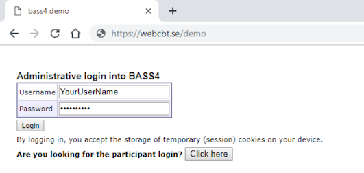

1 Introduction
Disclaimer: This manual is written primarily for full-access database administrators. While you will find instructions and useful tips even if you’re not an administrator, note that all options described may not be available to you if you have limited access. In this manual you will learn how to manage participants, combine self-help material into treatments, keep track on events during an ongoing study/program, manage security and privacy settings, collect and export data and communicate with participants through the administration interface of BASS.
Should you have questions not yet answered by this manual, you’re very welcome to contact us at bass-support[at]ki.se.
BASS is comprised of two main parts, or user interfaces: the administrator’s view and the participant’s view. These are part of the same database, but accessed through slightly different web addresses, URL:s.
- The administrator’s view is accessed through the URL https://webcbt.se/YourDataBase or its variant https://bassdb.se/YourDataBase.
- The participant’s view is accessed through a similar URL: https://YourDataBase.webcbt.se or its corresponding variant https://YourDataBase.bassdb.se.
- These different URL domains are presented as options for you to choose which one suits your project the best. A research project might not have much in common with CBT treatments, and as such the domain ”webcbt.se” might seem a little odd to participants. In such cases, the domain ”bassdb.se” might be more suitable. On the flip side, ”webcbt.se” might be a perfect fit in the case where CBT treatments are in fact the main part of your project.
- BASS is a powerful and flexible tool specifically designed for online psychological research projects or treatment programs. It supports online registration, assessment, treatment as well as being able to provide detailed data reports.
- BASS is currently used by a multitude of different research projects and treatments.
- We offer active remote support accessed by mail, telephone and/or digital meetings such as Zoom, Microsoft Teams or similar applications. For clients located in Stockholm, Sweden and the surrounding area, we also offer in-person meetings at the Karolinska Institutet campus in Solna.
2 The Basics
Let’s begin with the basics, and start with a quick overview of the participant’s view. It is a good idea to familiarize yourself with this view, as most of what you do in the administrative view will have one or more effects in this view. As such, before we begin tweaking things we ought to know what we are tweaking.
- The login screen for participants is accessed by either
https://YourDataBase.webcbt.seorhttps://YourDataBase.bassdb.se, as noted earlier. This is where your participants will login to their personal account and access assessment and/or treatments. To create an account, a participant can either register one themselves through BASS’ built-in registration feature or have their account set up by you, the administrator. We will touch on both of these subjects later on in the manual as they both require detailed explanations. - When your participants have logged in, there are three possible screens they may encounter depending on whether they have an active assessment and/or treatment or not.
- If your participant has an active assessment, they will be presented with it as soon as they log in. This is true even if they also have an active treatment. When they’ve completed the assessment, they will be taken to the home page if they have an active treatment. If they do not have an active treatment, they will be automatically logged out since there is nothing else for them to do in BASS at that point.
- If your participant does not have an active assessment, they will be presented with their home page.
- If your participant has neither an active assessment nor an active treatment, they will be automatically logged out since there is nothing for them to do in BASS.
- When your participants have active treatments and no active/pending assessments, they will land at their treatment’s home page. Here are the most common menu options in a treatment:
- Start Page – their treatments’ welcome page
- Modules – Treatment modules. Clicking here shows treatment modules you’ve marked as ”accessible”.
- Messages – BASS’ built in messaging feature which enables secure messaging between a participant and their assigned therapist.
- Privacy notice – A legal document which is required by EU law (GDPR) and explains what personal data is collected by the project, who stores it and who has access to it.
- Log out – Logs the participant out of BASS and ends their session.
- We will touch upon all these and other treatment menu options later on in the manual. For now, we’re just getting acquainted with the user interface. You may have noticed that there are no menu option for assessments. This is because they are handled differently than treatments. We will return to this topic later on.
3 Dictionary
These are recurrent concepts in the manual:
Instrument
An instrument is an electronic version of a paper form used during psychological assessment. Some examples of digitalized instruments are VAS (visual analogue scale), MADRS (Montgomery Åsberg Depression Rating Scale), SWLS (Satisfaction With Life Scale) and LSAS (Liebowitz Social Anxiety Scale).
Assessment
An assessment is a set of instruments, given in a specific order and at a specific occasion or for a specific number of occasions. A pre- and post-treatment assessment often consist of the same instruments with the afterward addition of one instrument measuring treatment satisfaction.
Project
A project is the administrative concept that connects a set of assessments to a set of participants.
Participants
A participant need to be assigned to a project to be able to fill in instruments and follow an assessment.
Group
A project can be divided into groups, and the assessments of participants of the same group in a project can be managed collectively.
2FA
2FA stands from two-factor authentication, which is required by BASS by default. As of this writing, this could be set up to use SMS, e-mail och authenticator apps (TOTP).
4 Login
As soon as your database setup is ready, you can login to the administrator’s interface. The interface is found at an URL of the format https://webcbt.se/NameOfYourDatabase or https://bassdb.se/NameOfYourDatabase. Enter your credentials in the login box and press the Login button.

6 Settings and security
The security settings are split up between two menu options: The Project security and Security settings options, respectively. Project security deals with two-factor authentication for your participants in a specific project. You are given the options to provide 2FA via SMS or e-mail, or both. You can also opt to use 2FA via one of two authenticator mobile apps: Microsoft Authenticator or Google Authenticator. This option is called TOTP. Security settings handles global security settings for your database.
Security settings (therapists) Here you can choose by which mean (SMS and/or e-mail) you want 2FA for therapists. Check the box or boxes for the options you want to use. Below the 2FA options are password requirements. Here you can specify rules for the passwords of therapist logins. You can also specify if you want mandatory password changes by typing in a number in the box labeled Monthly interval for mandatory password change.
Security settings (participants) In this table you can decide whether you want to use the quick login feature or not, as well as specify the settings for it. To allow the use of it, simply check the box labeled Allow quick login. In the box below, you can specify what number of days the quick login codes are valid after they’ve been generated (default 14 days). Be wary of allowing too long periods of time, since quick login codes does not require user names, passwords or 2FA. Before you consider using quick login codes, make sure your participants does not share e-mail accounts for cell phones with anyone else. If another person gets hold of an active quick login code link, they will have access to that participant login as long as that code stays active. Note however that the quick login only gives access to assessments, access to treatment always require a password.
Below the duration setting, an example URL for quick login codes is shown.
Wait! What are quick login codes? Quick login codes are sequences of numbers and letters that are assigned to >participants. Each participant is assigned their own unique code. BASS can >use these unique codes to identify the participant and log them in to their >account automatically, without requiring user name, password or 2FA. This >is useful if you wish to streamline the login process and lower the >barriers for your participants. As mentioned above, it does pose some vital >security questions however and should not be used unless you feel >comfortable in that the security of your participants isn’t jeopardized.
Lost password method The options here allow you to specify how participants who report lost passwords are handled. You can choose whether to require participants to confirm their e-mail or not before they’re flagged as having reported a lost password.
Participant files This option governs whether the uploading of participant specific files is allowed. This options is provided to allow different therapists to upload for example offline paperwork as a scanned file, or a complex figure drawing. This is a solely administrative side feature, and does not allow uploading and sharing of files with the participant in question.
OAuth TOTP app links (participants) The OAuth feature allows you to use authenticator apps (for example, Google Authenticator or Microsoft Authenticator) for two-factor authentication. This is a more secure way to use 2FA than SMS or e-mail, but requires a few more steps for the participant to activate. For participants who are less accustomed to modern technology, 2FA via SMS or e-mail may be preferrable.
The selection here determines what apps are suggested when participants install TOTP on their smartphone. We can add links to other apps on your request.
7 External messages
Under this menu option, you can adjust the settings for external messages sent from BASS (SMS and e-mail), as well as type standard messages to be used for assessments and treatments.
SMS settings The first box is labeled SMS sender name, and is the name shown as the sender when a participant or therapist receives an SMS from your database. The box below, labeled Standard SMS with quick login code, is only relevant if you’ve elected to use quick login codes (see the previous chapter: Settings and Security). The message you type here will be the standard message that participants receive when their quick login codes are updated.
Below that is the dropdown menu Delivery method for new message notifications to therapists. Currently, this setting has no effect and BASS does not give immediate information about new messages.Therapists are instead informed about new messages through the nightly “Unhandled participant tasks” email.
New treatment message notification settings Here you specify how notifications about new messages will be delivered to participants, and what the notification message is. You can have them delivered by SMS or e-mail, by checking the relevant radio button. Below that, there is a box for New message email subject. This is only relevant if you’ve selected the e-mail radio button above. This is the subject header for the e-mail that is sent to the participant as a notification of new treatment content. The box labeled New message notification is where you type the message that will be sent as an SMS or e-mail according to the settings you’ve specified above.
SMS count per month This table shows you how many SMS messages have been sent from your database on a monthly basis, with a total summary at the bottom.
Email settings Under this headline are the settings for e-mail addresses connected to your database. The first one, Sender automatic messages, is the e-mail address that is shown when automatic e-mails are sent to participants or therapists. These are by far and large notification messages. It is set to webcbt-noreply[at]ki.se by default. Below that is the General mailbox for database. This e-mail address is shown to participant as the contact e-mail in case they’re experiencing issues. It is also used as a fallback address in case a participant does not have a therapist assigned to them, so that they won’t go unnoticed if they report a lost password or score an instrument in a manner that requires immediate attention.
Assessment reminder settings Here you specify the settings for automatic reminders connected to assessments. You can specify at what hour you want reminders to be sent (default is 12, at noon). This works on a 24-hour basis, so you can set any whole number between 0-24. You can also specify a time after which no reminders will be sent. This is useful if you want to spare your participant the annoyance of being reminded to complete their assessments at 23:00/11 pm. Below these settings are two textboxes, Standard SMS assessments reminder and Standard email assessment reminder. In these boxes you can type standard messages for reminder notifications. If you want custom reminder messages for assessments, you can type them in the corresponding text box in the assessment editor.
8 Registration options
Placeholder
9 Search participants: Finding what you need
Placeholder
9.1 Selection/filter
9.2 Search
9.3 Hide, show and sort columns
9.4 Column explanations
9.5 Save/load search settings
10 Participants
Placeholder
10.1 Creating, deleting and editing participants
10.2 The participant view
10.2.1 Participant stats
10.2.2 Participant treatments
11 Instruments
Placeholder
11.1 Copy an instrument
11.2 Creating a new instrument
11.2.1 The General Tab
11.2.1.1 The BASS4 Table
11.2.2 The Preview Tab
11.2.3 The Edit Tab
11.2.4 Extra information
11.3 Scoring formula
11.4 Export
12 Assessments
Placeholder
12.1 Create or edit assessments
12.1.1 Name
12.1.2 Label/Custom label
12.1.3 Managed
12.1.4 Repitition
12.1.5 Time limit
12.1.6 Clinician rated
12.1.7 Randomize instrument order
12.1.8 Welcome/Thank you text
12.1.9 Concurrent and merged assessments
12.1.10 Automatic reminders
12.1.11 Participant flagging
12.2 Copy assessment
12.3 Dummy assessments - some scheduling tricks
12.4 Assessment instruments
13 Create new treatment
Placeholder
13.1 A typical treatment structure
13.2 Creating a treatment container
13.3 Creating a treatment
13.4 Treatment Modules
13.5 Treatment Content
13.5.1 Content text
14 Therapists
Placeholder
14.1 Creating a therapist account
14.2 The “Manage Therapists” view
14.2.1 Creating a new therapist account
14.2.2 The Information Tab
14.2.3 The Privileges Tab
15 References
In this chapter we list some helpful references and tools that might aid you when working with BASS.
15.1 Tools and resources for working with treatments
Treatments are the most complex and knowledge-intensive thing to build and maintain within BASS, as they require some know-how when it comes to Markdown and HTML. If you want to add some stylish flair to your treatment, you’ll need to dive into a bit of CSS. More advanced and more interactive treatments might require knowledge of JavaScript as well. Here below are some online resources and tools which you may find helpful:
Coding software (IDE:s)
- https://atom.io (an open-source IDE with good enthusiast support)
- https://code.visualstudio.com (a full-featured IDE from Microsoft)
Online resources on Markdown, HTML, and JavaScript
- https://www.markdownguide.org (a well presented and comprehensive guide on using Markdown)
- https://www.w3schools.com (a good resource for referencing HTML, CSS and JavaScript)
- https://javascript.info (an in-depth and comprehensive guide and tutorial on JavaScript)